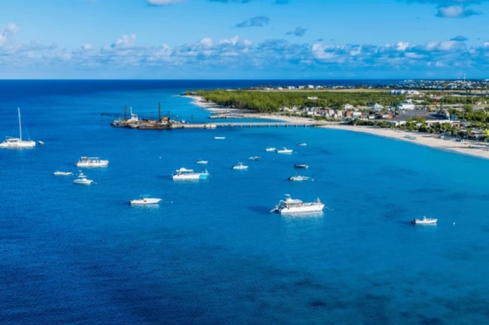
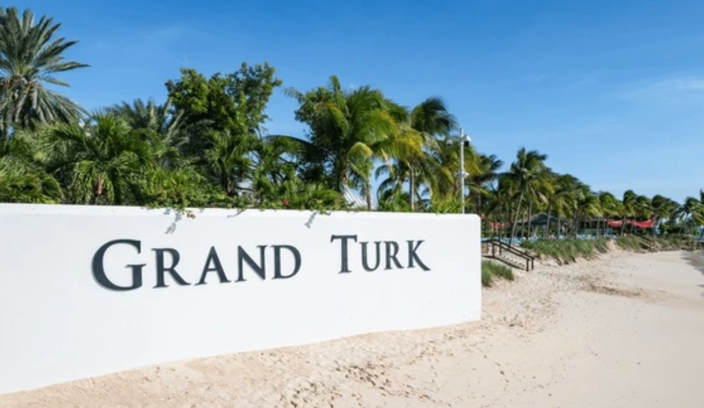
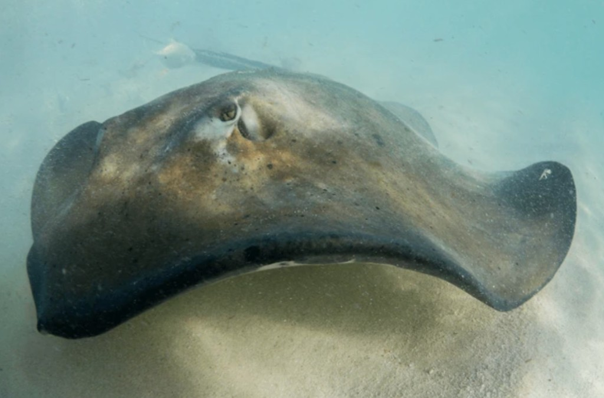
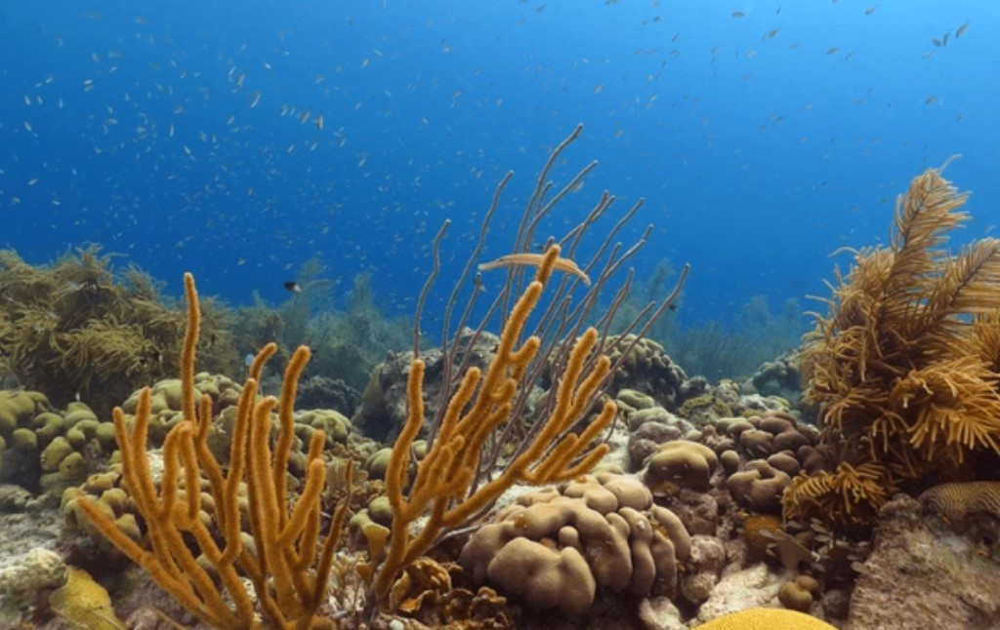
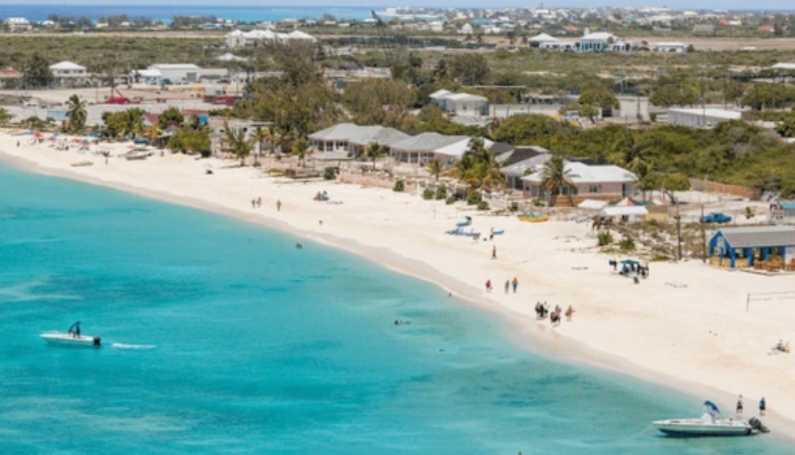

Why cruise guests
plan carefully here
Grand Turk’s pier sits beside a swimmable beach. Many guests stay at the Cruise Center; others take a boat to Gibbs Cay or a short island loop. Shore time depends on your ship — confirm arrival and all-aboard before you commit to anything far from the pier.

Popular Grand Turk experiences
Editorial guides only in this phase — we do not take bookings or payments on this site.

Cruise Center Beach
Step off the ship onto white sand and clear turquoise water — often with no transfer.
Beach Breaks
Gibbs Cay
Short boat ride to a sandbar known for shallow-water stingray encounters — wildlife not guaranteed.
Explore Gibbs Cay
Snorkelling Tours
Reef patches and clear water on guided snorkel trips from the port area.
See snorkelling
Island Tours
Cockburn Town, lighthouse views and Grand Turk highlights by van or tram.
Plan an island dayWhich Grand Turk Excursion Fits Your Call?
Match beach time, Gibbs Cay, snorkelling or island sightseeing to the shore time your ship actually gives you. Durations below are typical planning ranges — not guarantees.
| Option | Typical duration | Best for | Activity | Details |
|---|---|---|---|---|
| Cruise Center Beach | Flexible | Walk-off beach day | Low — swim & relax | Guide → |
| Gibbs Cay | Often ~2–3 hrs | Boat trip + sandbar stop | Low to moderate | Guide → |
| Snorkelling | Often ~2–3 hrs | Reef & clear water | Moderate — swim | Guide → |
| Island Tour | Often ~2–4 hrs | Cockburn Town & viewpoints | Low — van touring | Guide → |
| Golf Cart Tour | Often ~1.5–3 hrs | Coastline & town at your pace | Low — self-drive/ride | Guide → |
| Lighthouse Visit | Often ~2–3 hrs | Historic lighthouse & views | Low to moderate | Guide → |
| Private Tour | Flexible | Custom pacing for groups | Varies | Guide → |